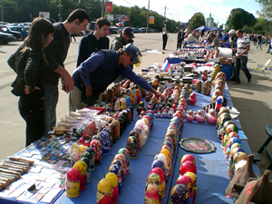
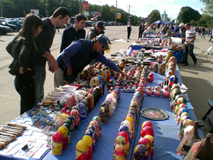

Moscow has served as the capital city of Russia since the 15th century, although archaeological evidence indicates that the site has been occupied since Neolithic times, the village of Moscow was first mentioned in the Russian chronicles in 1147.
Moscow was burned by the Tatars in 1381 and again in 1572. It was taken by the Poles during the "Time of Troubles". In 1611 the Muscovites, under the leadership of Kuzma Minin and Prince Dmitri Pozharski, attacked the Polish garrison and forced the remaining Polish troops to surrender in 1612. Built largely of wood until the 19th century, Moscow suffered from numerous fires, the most notable of which occurred in the wake of Napoleon's occupation in 1812.
Moscow was rebuilt in the 1830 and In 1918 under the control of the Soviet Union, the Soviet government transferred the capital back to Moscow and fostered spectacular economic growth in the city.
During World War II the German military launched an two pronged offensive against Moscow. Although the spearheads of the German columns were stopped only 20 to 25 miles from the city's center yet Moscow suffered virtually no war damage.
Due to inadequate public funds, Moscow's infrastructure suffered after the 1991 demise of the Soviet Union. Also, an increase in automobile ownership brought traffic congestion and worsened air pollution. The city, however, began to attract foreign investment and became increasingly westernized. In the 1990s its energetic mayor, Yuri Luzhkov, launched many ambitious reconstruction projects and by the end of the decade Moscow was experiencing a real-estate boom.